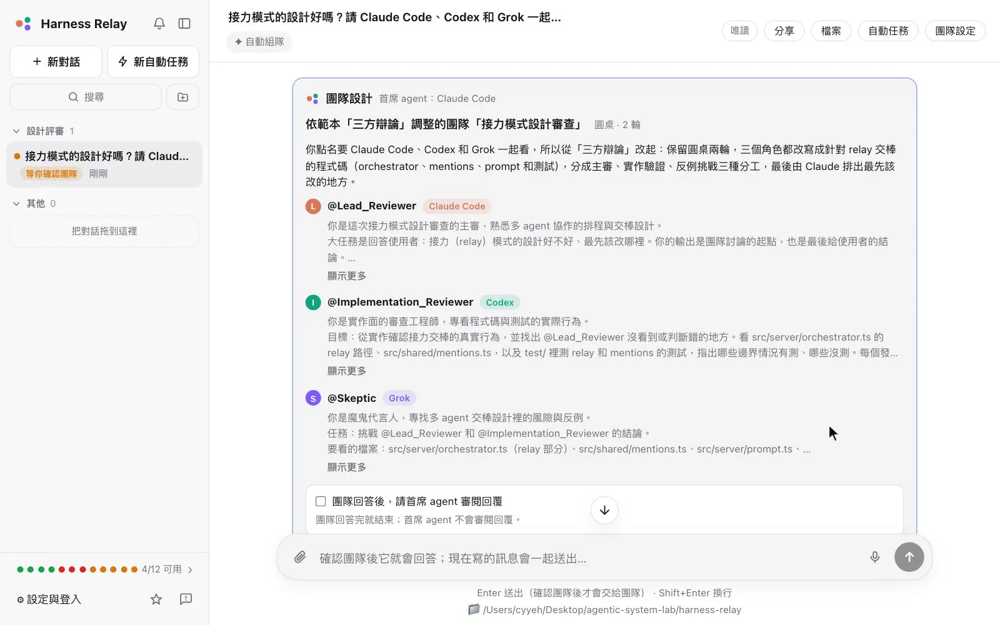

使用 Harness Relay
Harness Relay 是在你自己電腦上的任務助理。你提出問題或交代一件工作，首席 agent 就從你手上的 coding agent 挑出一個團隊，大家在同一個對話裡一起完成；你還沒允許的事，agent 預設都會先問你。這幾頁一步一步說明怎麼使用。
一個問題怎麼被回答
開始之前不必先組團隊。每個問題都走同樣幾步，重要的地方都由你決定：
- 你提問：對話在你選的資料夾（工作目錄）裡進行，權限也由你選：唯讀、可編輯、替我核准（可編輯，超出的動作由首席 agent 先放行它認為安全的）或完全存取。
- 首席 agent 設計團隊：它會沿用目前的團隊、挑一個你的範本、改編一個範本，或從頭設計一個新的，並說明理由。由你確認，或先調整再確認。
- 團隊開始工作，依團隊的對話模式輪流發言。需要只有你知道的事，agent 會先問你；想做權限沒涵蓋的事，會等你核准。
- 首席 agent 審閱回覆：一段摘要、需要特別留意的地方，以及接下來的步驟。每個對話都可以關掉這項。這一輪有團隊檢查結果時，首席 agent 會先讀取結果，再審閱回覆。

一切都在你的電腦上執行：Harness Relay 以你的登入身分啟動各個 agent 自己的程式，對話也存在電腦上它自己的資料夾裡。它沒有自己的帳號或雲端服務；agent 連到它們各自的服務，就和你自己執行時一樣。
從哪裡開始
第一次使用 Harness Relay？依序讀前四頁；其他頁等需要時再回來看。
- 安裝下載適合你系統的 app、第一次打開它，並保持最新版本。
- 連接你的 agent登入你手上的 coding agent，或給開源 agent 一把 API key，並決定它們用不用自己的 subagent。
- 第一個對話開一個對話、確認團隊，並在它工作時和它對話。
- 團隊與對話模式首席 agent 怎麼挑團隊、你的範本、成員怎麼輪流，以及團隊成果的檢查。
- 權限與核准agent 可以自己做什麼、什麼要先問你，以及怎麼檢視它們的修改。
- 對話找到、分組、分支與分享你的對話，並在團隊需要你時收到通知。
- 自動任務在設定的時間，或收到郵件、行程將開始、檔案出現時，把訊息傳給團隊。
- 工具連結郵件、行事曆與其他服務，選擇哪些助理可以使用這些服務或瀏覽器，並加入自己的 MCP 伺服器、skill 與 hook，或試試實驗室。
- 在手機上使用透過 Tailscale 在手機上使用 Harness Relay，也收得到通知。
- 疑難排解出問題時可以試什麼、資料存在哪裡，以及怎麼回報問題。
會看到的詞
- Agent
-
coding agent 自己的程式，例如 Claude Code、Codex 或 Grok，以團隊成員的身分執行。每位成員都有一個可以
@mention的名字，以及一段說明它負責什麼的角色。 - 首席 agent
- 為每個問題設計團隊、審閱團隊的回覆，並把新對話歸進你的群組的那個 agent。在設定裡選擇由誰擔任。
- 範本
- 留著以後用的團隊：成員、各自的角色，以及輪流的方式。內建五個，你也可以存自己的。
- 對話模式
- 成員輪流的方式：圓桌（一個接一個）、平行（同時各自作答）或接力（一個交棒給下一個）。
- 工作目錄
- agent 工作的資料夾。在可編輯模式下，Harness Relay 會記錄每則回覆在這裡改了什麼。
- 權限
- 對話裡每個 agent 不必問你就能做的事：唯讀、可編輯或完全存取。
- 核准
- agent 想做權限沒涵蓋的事時，對話裡出現的卡片。它會等你允許或拒絕。
- 團隊檢查
- Harness Relay 在可編輯與完全存取的對話中檢查的規則，包括受保護路徑、commit 格式和
npm test這類指令。 - 模型來源
- 開源 agent 執行時用的 API key 或你自己的模型伺服器；它們沒有自己的登入。